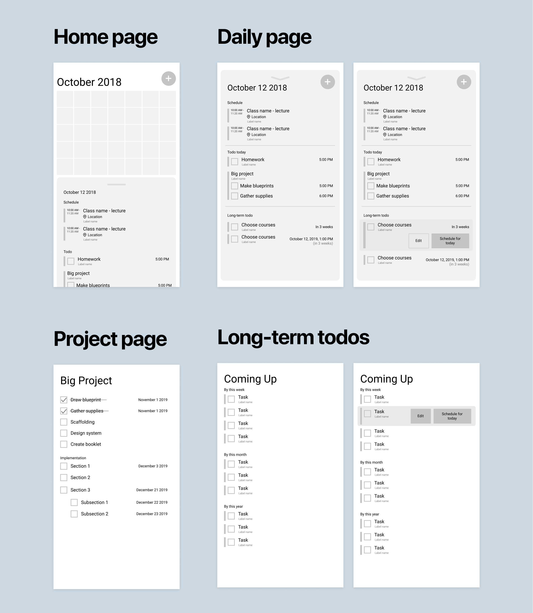

Planify
Sep - Dec 2018
An all-in-one agenda + planner + project management application for students
Role: sole designer
Timeline: designed in a span of four months, working on it one day a week
Tools: Figma, Google Forms & sheets, pen/paper

the result
Live Figma prototype available here
Background
During my internship at UWaterloo IST, I had the opportunity to work on a passion project one day a week. Based on my personal need for a reliable planner/agenda application, I decided to design this!
Problem
At the time of writing, I had been using a combination of 3+ productivity apps to keep myself organized. I wanted to come up with a solution that would consolidate all my needs into one app.
Goal
Creating a productivity app for students to keep track of assignments, classes and everything else
Research
User research
I surveyed over 330 students and asked them about their planner/agenda system, what they liked and disliked.
Here are some of the results from the survey:

Competitor Analysis
I studied 3 different types of productivity apps: Google Calendar (calendar-based), Trello (task-based), and MyHomework (student focused & task-based).
Here were some of the takeaways:

Insights
Pain points:
-
Task-based apps:
- There is a disassociation between tasks and time which makes it easier for tasks to slip through the cracks
- Unstructured unless you know of a system you want to follow
- Having long lists of things to do can be overwhelming
-
Calendar-based apps:
- Everything must be associated to a date and time which may not be the case for all tasks (for example, laundry does not need to be done exactly at 2:30pm on Saturday November 19th)
- In month view – 30/31 cells full of information shown on every page which can be overwhelming
Requirements:
- Fast data entry
- Flexible without being too unstructured and customizable
Ideation
HMW's
- How might we combine the flexibility of task-based productivity apps and the organized approach of calendar-based productivity apps?
- How might we present todos in a non-overwhelming way?
User Flows Sketch

IA sketch

Wireframes
I drew inspiration from the flexibility of post-it’s that allow people to move them around after jotting things down. I tried to emulate the feeling of flexibility by using a lot of cards to make things feel more movable.
Design features include:
- Reminders about long-term to-dos so you don't forget about them
- A minified calendar that shows you if you’ve got something on that day, with the option to see more if you want, rather than everything being displayed for you front and centre
User testing
Setting tasks without a fixed due date
One challenge that testers had was discovering how to set a task without a fixed due date.
Previous flow:

I noticed that this was difficult for users because they would have had to tap the due date settings before choosing the time frame they wanted, whether it was for a specified due date or a time frame, which broke their mental model. I fixed this by placing this option outside the “choose date” modal.
Modified flow:

Results
Live Figma prototypes here
Reflection
What I learned
This was my first case study ever, and so I learned a lot of things along the way. I learned how to ask meaningful questions during user testing, and do comparative analysis.
Next Steps!
I want to add more features! One that I’ve already gotten started on is a Kanban board integration (like on Jira) where you can organize by To-do, doing and done.
I want to code this! I’ll most likely start with web since that’s what I’m most familiar with, then use NativeScript or Flutter to make this into a native application.